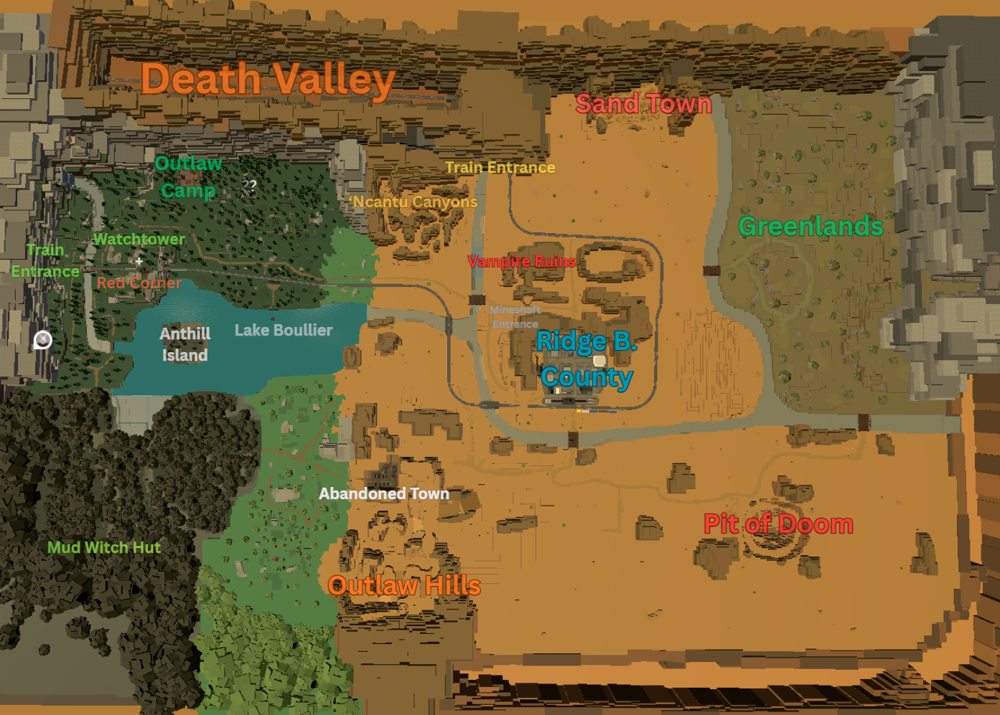

Bridger Western World Map
All locations, NPCs, shops, and points of interest in Ridge B Valley.
Help us improve this map by telling us what you need:

Since you're exploring the map, you might also need:
The Bridger Western map shows all key locations across Ridge B Valley. The bridger: western map (also searched as bridger western world map) covers the Main Town with essential services: Gun Store (sells most guns), General Store (knives, cowboy hat, poncho, lasso, coin, lantern), Banker (item storage, NOT kept upon wipe), Tailor (reroll shirt/pants 15 Moola, accessories 30 Moola), Barbershop (hairstyle 25 Moola, hair color 15 Moola), Red Corner Fight Club (fist fights, losing costs 300 Moola), and Blacksmith Flint (Can Questline, Mares Leg repair 1500 Moola).
Special locations on the Bridger Western world map include the Mud Witch's Hut in the Swamp area (Card rolls 150 Moola, Dogbane Herb trades for 2500 Moola / age regression -20 years / Stand removal), Horse Stables (replace horse, press M for stats: Speed, Stamina, Jump, Damage, Scale, Turn — Mythical and Legendary horses available), Outlaw Camp Dealer (extra guns and throwables), and Spawn Point NPCs at various locations (150 Moola to change respawn).